Tim Walker — overlay proofs
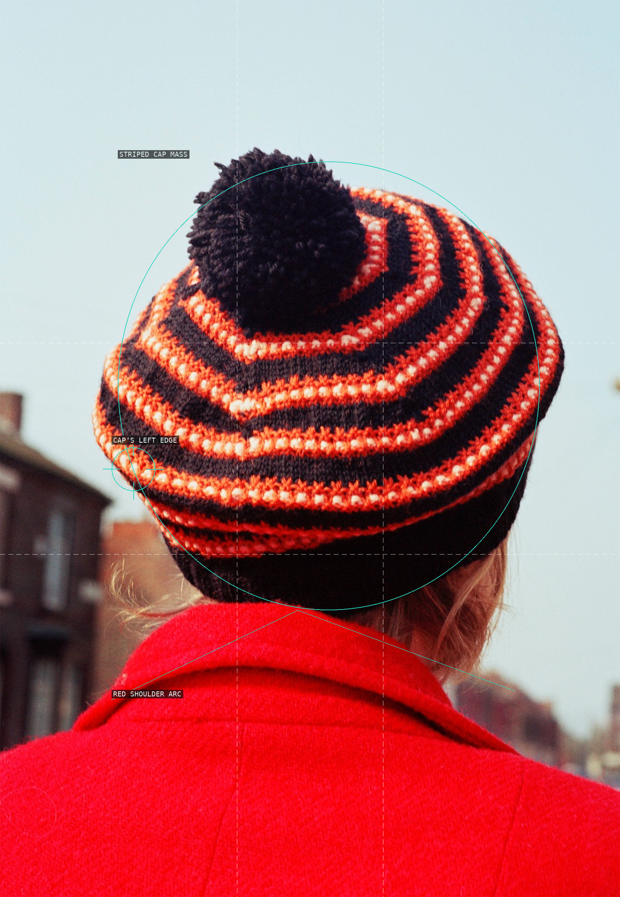
01 — cap mass and red shoulder arc
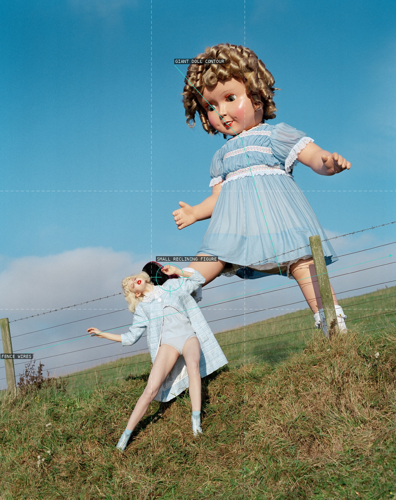
02 — doll, figure, and fence
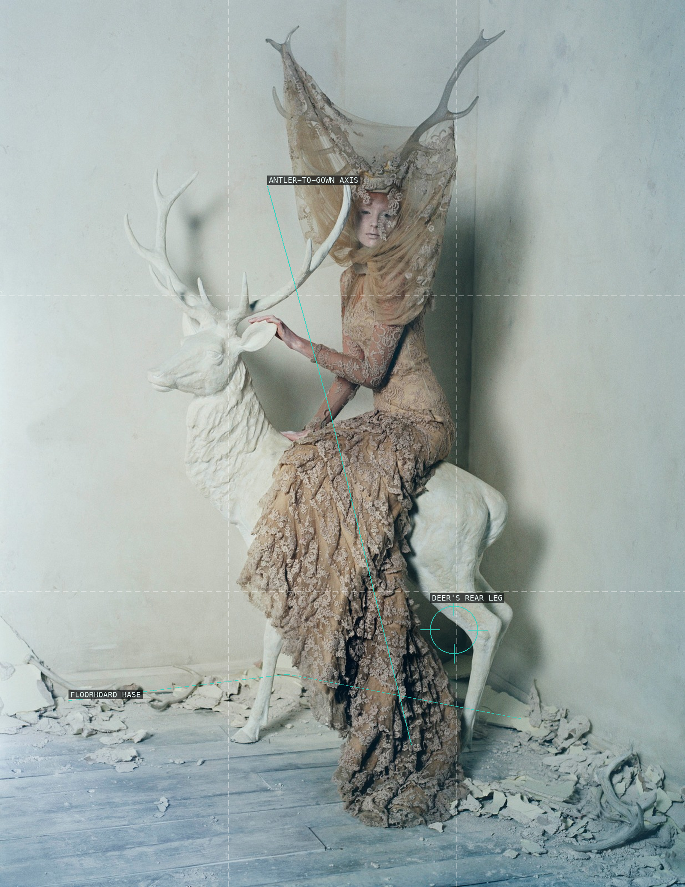
03 — deer, gown, and antlers
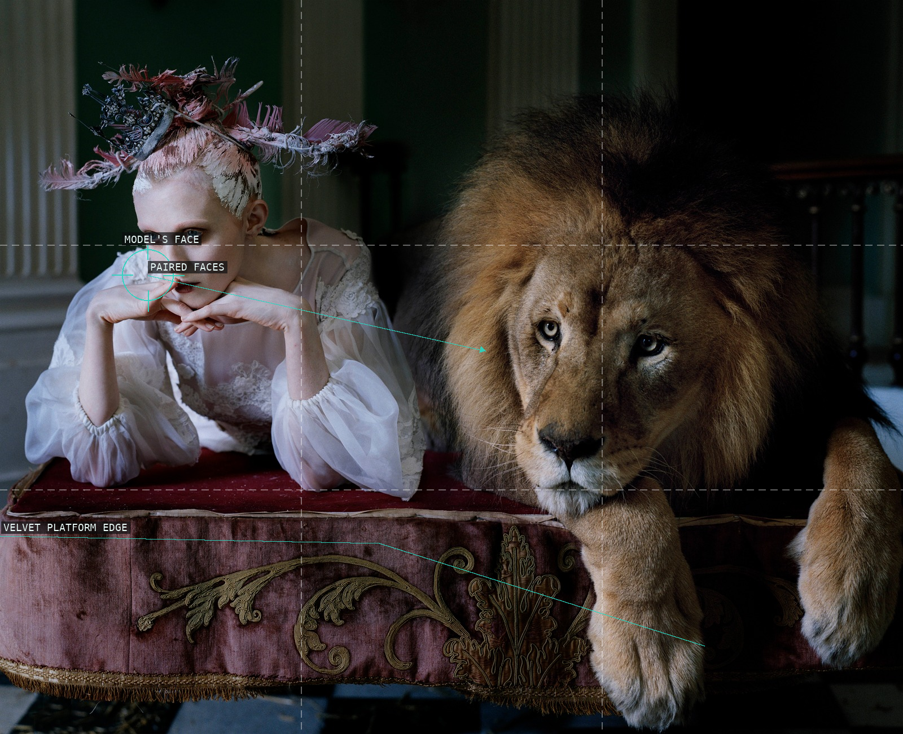
04 — paired faces and platform
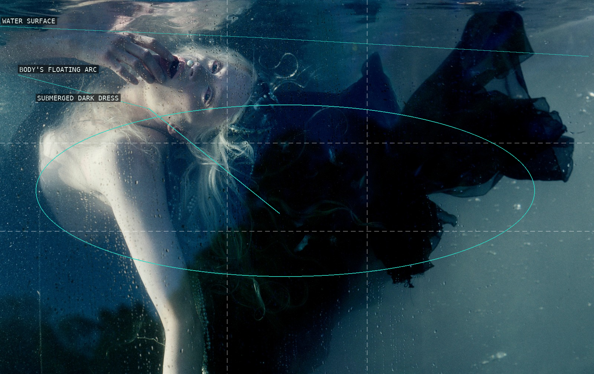
05 — floating body and dark dress
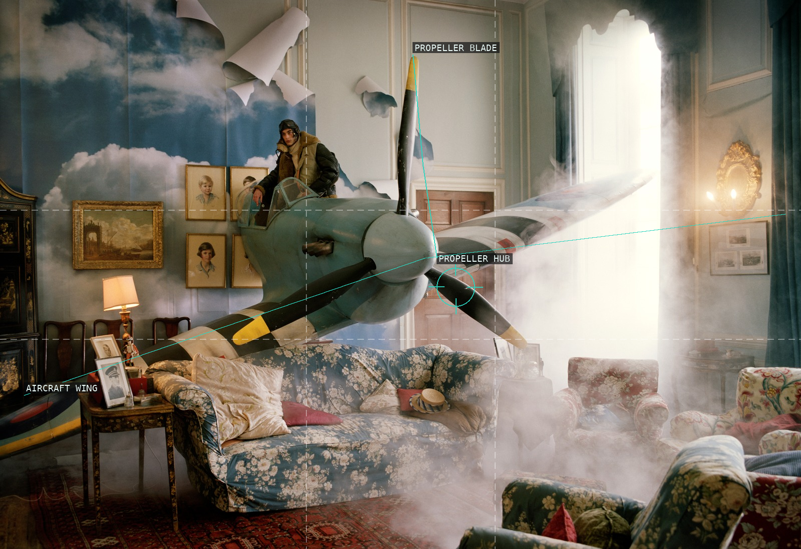
06 — aircraft and exit light
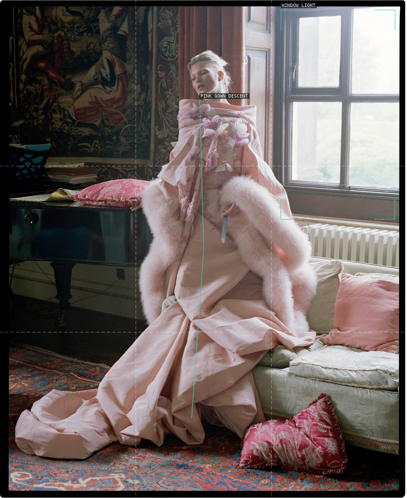
07 — window light and gown descent
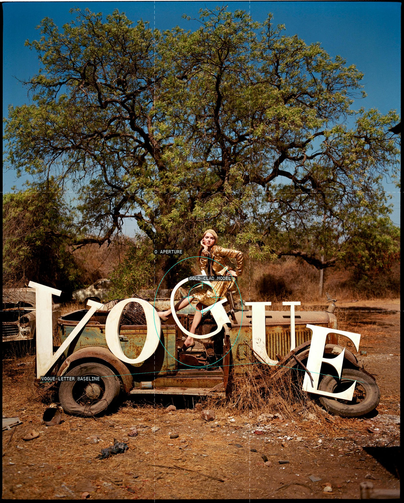
08 — figure framed by VOGUE letters
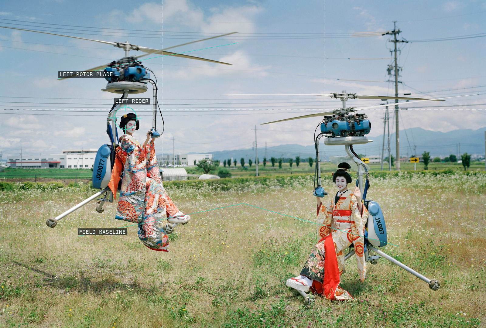
09 — two hovering machines
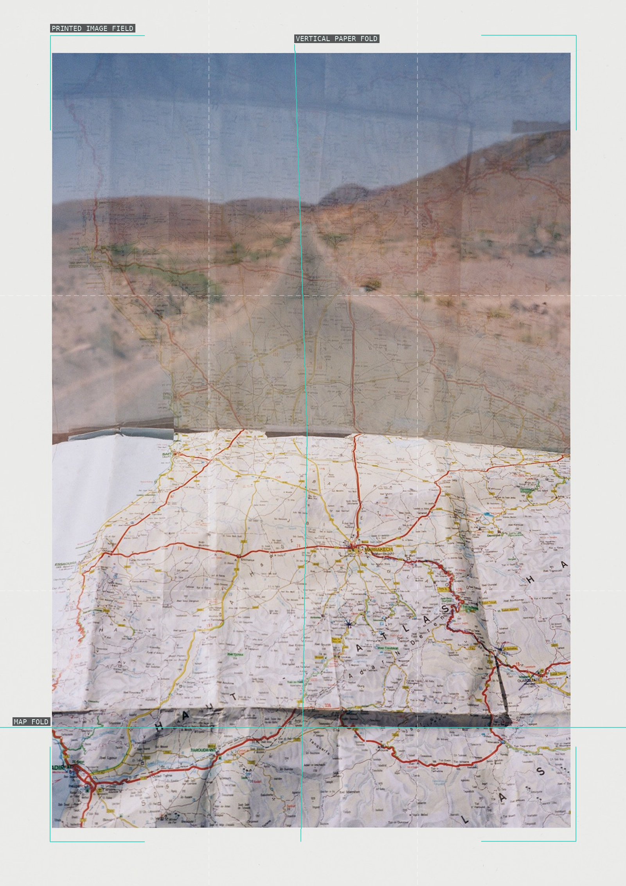
10 — printed map and folds
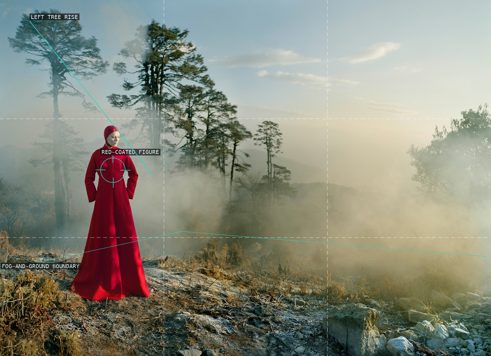
11 — solitary figure and fog
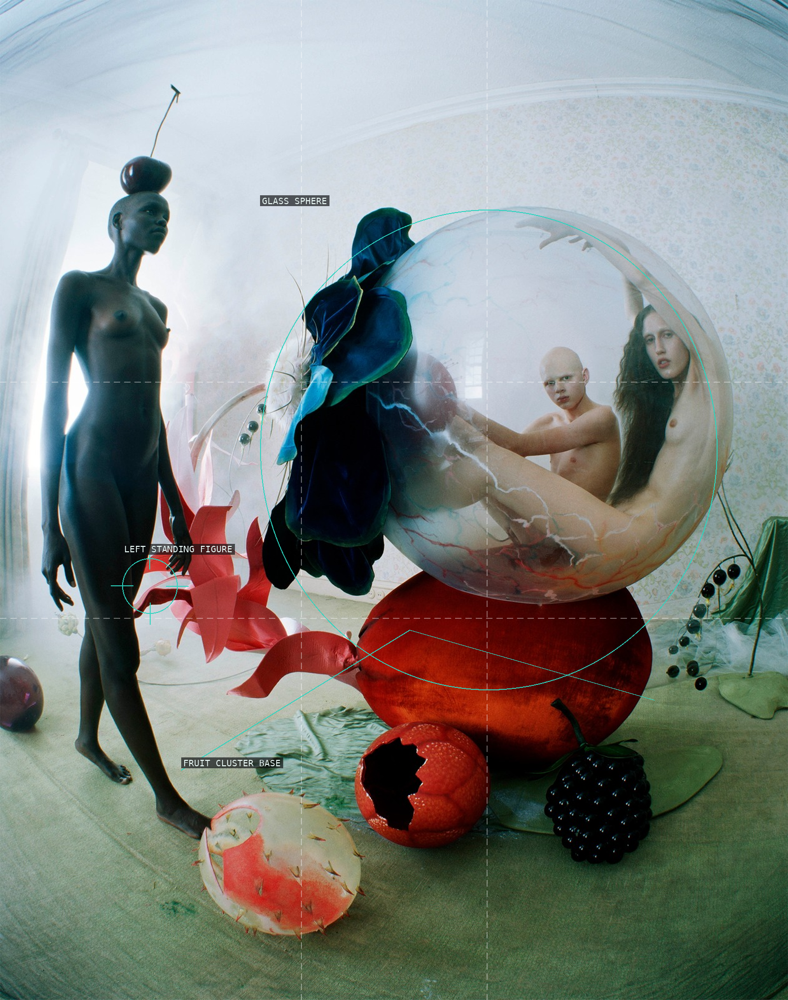
12 — glass sphere and fruit